Bài cá nhân · 4 giờ trên lớp (+ ~10′ chuẩn bị) · PyTorch CPU · CVAT 3D (D14-<ID>-A/B) · Commit 5b trước sweep · Nộp commit SHA repo K5-L23-DAY14-HoVaTen-MSSV-PointPillarsPrelabel trước 12:00 hôm sau (GMT+7)
# Day 14 Lab — Pre-label 3D bằng PointPillars pre-trained (VF LiDAR)
Bài thực hành cá nhân này kéo dài 240 phút trên lớp (cộng ~10 phút chuẩn bị trước buổi giảng) trên dữ liệu LiDAR 360° của Day 13. Bạn sẽ chạy model PointPillars đã huấn luyện sẵn trên tập KITTI (zhulf0804/PointPillars, giấy phép MIT, commit 620e6b0) hoàn toàn bằng CPU mà không cần GPU hay biên dịch CUDA: hai phép toán CUDA gốc là voxelize và rotated NMS đã được thay bằng mã PyTorch thuần trong vf_pp/upstream.py, còn mã nguồn upstream không bị sửa dòng nào. Từ kết quả pre-label, bạn đẩy box lên CVAT 3D cá nhân, tự sửa tay 3 frame tập A làm nhãn tham chiếu, commit dự đoán Bước 5b rồi quét tham số để đo mức giảm công sửa trên thước đo 0.3·xóa + 1.0·thêm + 0.5·sửa, hoàn thiện 12 frame tập B (ref_B.json), viết báo cáo report/individual/<MSSV>_<HoTen>.md và đẩy lên repo K5-L23-DAY14-HoVaTen-MSSV-PointPillarsPrelabel để nộp link commit GitHub (có SHA) lên LMS trước 12:00 trưa hôm sau (GMT+7). Quy chuẩn chi tiết nằm ở SUBMISSION.md, RUBRIC.md, CHECKPOINTS.md, RULES.md và report/individual/MSSV_HoTen.md; tài liệu này không chứa mật khẩu, token hay nhãn đáp án.
Trước buổi giảng, hãy clone repository chính thức, dựng môi trường ảo Python 3.9+ và tải mã upstream PointPillars cùng weights KITTI (~20 MB). Hoàn tất bước này trước giờ học giúp bạn kiểm tra CPU, PyTorch và đường dẫn <Data-VF> (sequence_01 … sequence_05) đều sẵn sàng, đồng thời đọc trước CHECKPOINTS.md và RULES.md.
https://github.com/VinUni-AI20k/K5-L23-Day14-PointPillars-PrelabelScript setup_pp.py tải mã upstream đúng commit 620e6b0 và weights epoch_160.pth mà không biên dịch CUDA nhờ lớp PyTorch thuần trong vf_pp/upstream.py; nếu máy không có git, dùng --download-zip để tải qua HTTPS. Chọn tab theo hệ điều hành để cài PyTorch CPU (torch>=2.1), requirements.txt (numpy, Pillow, cvat-sdk), rồi chạy setup_pp.py và pp_selftest.py. Trên PowerShell 5.1, không dùng && hay source; chạy từng dòng, cấp quyền tiến trình cho .venv\Scripts\Activate.ps1 và đặt $env:PYTHONUTF8 = "1".
# Windows (PowerShell)
git clone https://github.com/VinUni-AI20k/K5-L23-Day14-PointPillars-Prelabel.git k5-day14-lab
cd k5-day14-lab
python -m venv .venv
Set-ExecutionPolicy -Scope Process -ExecutionPolicy Bypass
.\.venv\Scripts\Activate.ps1
$env:PYTHONUTF8 = "1"
pip install torch --index-url https://download.pytorch.org/whl/cpu
pip install -r requirements.txt
python setup_pp.py
python pp_selftest.py --data "<Data-VF>"# macOS / Linux (Bash)
git clone https://github.com/VinUni-AI20k/K5-L23-Day14-PointPillars-Prelabel.git k5-day14-lab
cd k5-day14-lab
python3 -m venv .venv
source .venv/bin/activate
pip install torch --index-url https://download.pytorch.org/whl/cpu
pip install -r requirements.txt
python setup_pp.py
python pp_selftest.py --data "<Data-VF>"third_party/PointPillars/.git, xóa third_party rồi chạy lại python setup_pp.py.python pp_selftest.py --data "<Data-VF>" và kiểm tra mọi dòng đều in [OK ] kèm TẤT CẢ OK.Dockerfile (tắt CVAT bằng docker compose stop nếu WSL2 RAM <= 4 GB tránh OOM exit 137, gắn -v "${PWD}\work:/work" -w /work giữ d14_<ID>/, và dùng --host http://host.docker.internal:8080).Build một lần bằng docker build -t k5-day14-lab ., sau đó chạy docker run --rm -v "C:\path\Data-VF:/data" -v "${PWD}\work:/work" -w /work k5-day14-lab python /lab/pp_selftest.py --data /data và kiểm tra TẤT CẢ OK.
.venv có Python 3.9+.setup_pp.py tải xong third_party/PointPillars (620e6b0) và epoch_160.pth.pp_selftest.py --data "<Data-VF>" in [OK ] ở mọi mục và TẤT CẢ OK.http://localhost:8080 hoặc server lớp) đăng nhập bình thường.Một mô hình phát hiện 3D được huấn luyện trên bộ dữ liệu KITTI không thể dự đoán chính xác ngay lập tức khi đưa sang bộ dữ liệu VF của Day 13 vì sự khác biệt cả về hệ tọa độ cảm biến, vùng quét không gian lẫn danh sách lớp đối tượng. Trên bộ KITTI, cảm biến chỉ gán nhãn trong vùng hình nón phía trước xe (x từ 0 đến 69.12 m, |y| < 39.68 m) và chỉ phân biệt ba lớp là Car, Cyclist và Pedestrian. Trong khi đó, đám mây điểm VF LiDAR thu thập toàn cảnh 360° quanh xe với hệ trục đặt khác hẳn: trục x hướng sang trái xe, trục y hướng về phía sau (nên đầu xe là hướng −y), trục z hướng lên, còn góc yaw trong [0, 2π) đo ngược chiều kim đồng hồ từ +x. Đồng thời, dữ liệu VF có thêm hai lớp phương tiện cỡ lớn là Truck và Bus mà trọng số KITTI chưa từng được học trực tiếp.
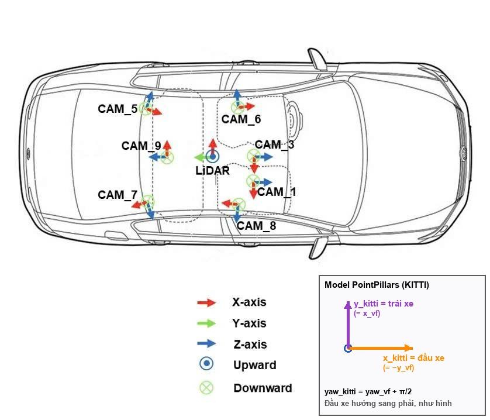
Vì model chỉ nhìn vùng 90° phía trước (x trong 0–69.12 m, |y| < 39.68 m), hàm Detector.raw_detect trong vf_pp/core.py thực hiện 4 lượt xoay tuần tự (passes = 4) ở 0°, 90°, 180°, 270° (bỏ qua an toàn lượt không có điểm), rồi gộp hộp bằng NMS không phân lớp (merge_nms_thr = 0.1). Vòng tròn chấm điểm bán kính 50.0 m (MAX_RANGE = 50.0, cố định bất kể tham số range_m) nằm gọn bên trong hợp bốn khung xoay này.
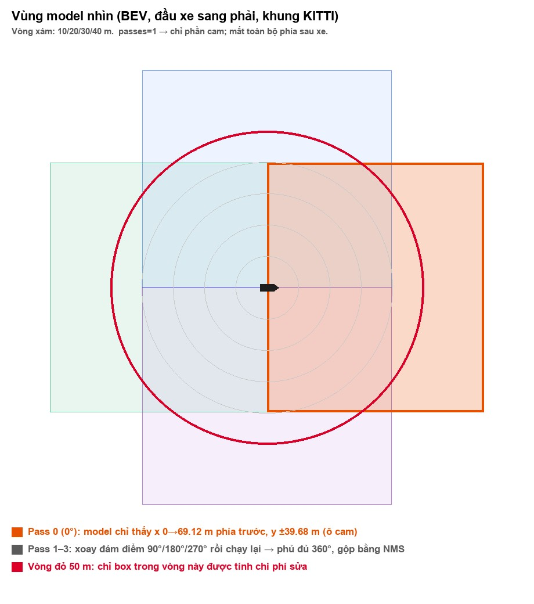
Chất lượng pre-label được đo trong bán kính 50.0 m bằng correction_cost = 0.3·xóa + 1.0·thêm + 0.5·sửa sau khi ghép 1–1 theo Hungarian (BEV IoU >= 0.3). Hàm needs_edit kiểm tra yaw theo chu kỳ π, nên box ngược đầu đúng 180° không tính là "sửa" nếu lớp, tâm và cạnh đã đạt.
| Thao tác (trọng số) | Điều kiện tính trong correction_cost (MAX_RANGE = 50.0 m) | Tác động khi sửa trên CVAT |
|---|---|---|
Xóa (0.3) | Box dự đoán dư không ghép được cặp với gt (BEV IoU < 0.3) | Bấm Remove hoặc Delete rất nhanh nên phạt nhẹ nhất |
Thêm (1.0) | Box thật trong gt bị model bỏ sót hoàn toàn | Phải vẽ cuboid mới và kéo lại 3 mặt cắt nên phạt nặng nhất |
Sửa (0.5) | Cặp khớp (BEV IoU >= 0.3) nhưng sai lớp, lệch tâm > 0.3 m, lệch cạnh > 0.2 m, hoặc lệch yaw > 10° (mod π) | Kéo khung Top/Side/Front hoặc gõ L/W/H, đổi nhãn trên DETAILS |
vf_pp/core.py:ConfigCác tham số trong vf_pp/core.py:Config được tách thành ba nhóm để bạn can thiệp đúng tầng khi tinh chỉnh. Nhóm A đưa điểm VF về lưới KITTI: luôn giữ voxel_size = 0.16 khớp weights đã huấn luyện và giữ passes = 4 để phủ đủ 360°, vì thay đổi hai tham số này làm tụt chất lượng ngay lập tức. Nhóm B đặt ngưỡng tin cậy chung (score_thr) hoặc theo lớp (thr_car, thr_cyc, thr_ped) cùng NMS nội bộ. Nhóm C hậu xử lý trên không gian VF: lọc min_points, nới hộp size_pad_m và đổi Car cỡ lớn thành Truck/Bus qua vf_class. Khi thử nhanh, dùng cờ --set KEY=VALUE; khi chốt cấu hình ổn định, lưu file JSON và truyền qua --config.
| Nhóm | Tham số chính (mặc định) | Ý nghĩa và phạm vi tác động |
|---|---|---|
| A. Đầu vào model | voxel_size (0.16), intensity_mode (clip/log/const), intensity_scale (1.0), ground_mode (fixed/auto), delta_z (0.0), passes (4) | Quy đổi điểm VF về miền KITTI; đổi voxel_size khỏi 0.16 làm sai lệch lưới mà weights đã học, giảm passes làm mất vùng nhìn |
| B. Đầu ra model | score_thr (0.1), thr_car/thr_cyc/thr_ped (None), nms_thr (0.01), nms_pre (100), max_num (50) | Lọc box theo độ tin cậy chung hoặc riêng từng lớp và đặt ngưỡng NMS bên trong mạng |
| C. Hậu xử lý VF | range_m (50.0), min_points (0), merge_nms_thr (0.1), size_pad_m (0.1), truck_l_min (5.6), truck_h_min (2.4), bus_l_min (9.0), bus_h_min (2.8) | Cắt bán kính giữ box, lọc box quá ít điểm LiDAR (min_points), nới kích thước (size_pad_m) và đổi nhãn Car dài/cao thành Truck hoặc Bus theo luật kích thước |
Bạn chạy thử model trên 6 frame chung của buổi giảng trong demo/frames_lec.txt (s02f07, s03f15, s05f40, s01f39, s03f18, s05f09) theo cấu hình gốc, rồi thử ghi đè hai tham số --set score_thr=0.4 --set min_points=5 để quan sát trực tiếp hiệu ứng đánh đổi giữa xóa box thừa và làm rơi box thật. Trên 6 frame này, với các box khớp nhãn, trung vị sai lệch là 13 cm ở tâm, 2.3° ở góc yaw và dưới 6 cm ở kích thước.
# Windows (PowerShell)
python pp_prelabel.py --data "<Data-VF>" --frames demo/frames_lec.txt --out out/lec.json --plot out/lec_png
python pp_prelabel.py --data "<Data-VF>" --frames demo/frames_lec.txt --set score_thr=0.4 --set min_points=5# macOS / Linux (Bash)
python pp_prelabel.py --data "<Data-VF>" --frames demo/frames_lec.txt --out out/lec.json --plot out/lec_png
python pp_prelabel.py --data "<Data-VF>" --frames demo/frames_lec.txt --set score_thr=0.4 --set min_points=5out/lec.json và vẽ 6 ảnh tổng hợp out/lec_png/*.jpg (mỗi ảnh gồm 7 góc camera và bản đồ BEV bán kính 50 m).out/lec_png/s05f40.jpg cùng các frame còn lại để đối chiếu box trên camera với vị trí vòng tròn BEV: ghi nhận model nhận xe con gần khá ổn, nhưng dễ gán nhầm xe buýt lớn thành nhiều hộp nhỏ, bắn nhầm hộp giả vào hàng cây/bụi rậm, hoặc bỏ sót Pedestrian và Cyclist ở xa.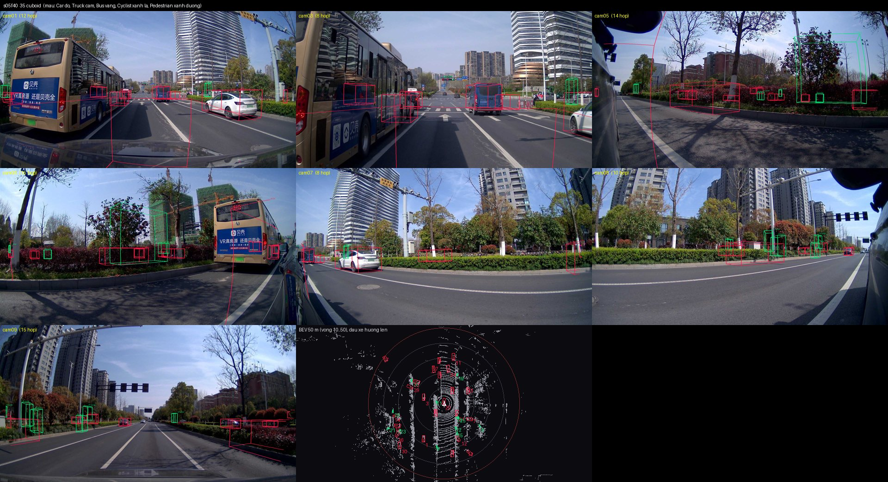
--set score_thr=0.4 --set min_points=5 và so sánh số lượng box in trên terminal (chẳng hạn ở s05f40 giảm từ 35 box xuống còn 20 box): quan sát xem những box biến mất là nhiễu trong lùm cây/hàng rào hay là phương tiện thật ở vành ngoài.Pha 1 hoàn thành khi bạn đọc được cả hai đầu ra terminal của 6 frame buổi giảng, mở đủ 6 ảnh out/lec_png/*.jpg và giải thích được vì sao hệ số phạt 1.0 cho mỗi box bị sót lớn hơn gấp ba lần hệ số 0.3 cho mỗi box thừa. Hiểu rõ quy luật đánh đổi này là nền tảng trực tiếp cho việc sửa tay nhãn tham chiếu tập A ở Pha 2 và đưa ra dự đoán trước khi chạy sweep ở Pha 3.
Dành 10 phút nghỉ giải lao rời màn hình trước khi bước vào Pha 3. Trước giờ quay lại, bảo đảm đã lưu d14_<ID>/ref_A.json khớp đúng số Items trên CVAT, sao chép report/individual/MSSV_HoTen.md thành report/individual/<MSSV>_<HoTen>.md và sẵn sàng ghi + commit mục 1 (Bước 5b) đầu Pha 3.
Ngay khi phần thực hành buổi chiều bắt đầu, giảng viên sẽ công bố một chuỗi <SEED> chung cho buổi học. Lệnh vf_cvat.py day14 kết hợp <SEED> với mã học viên <ID> qua hàm băm SHA-256 (d14:<SEED>:<ID>) để sinh hai danh sách frame hoàn toàn riêng cho từng người: tập A (frames_A.txt) gồm 3 frame thuộc 3 sequence khác nhau để tinh chỉnh tham số, và tập B (frames_B.txt) gồm 12 frame trải trên 4 sequence (3 frame mỗi sequence, cách nhau tối thiểu 15 frame) dùng cho bài nộp cuối. Các frame được tự động lọc tránh toàn bộ 6 frame buổi giảng, tránh 10 frame Day 13 của chính bạn, đồng thời mỗi frame tập A luôn cách mọi frame tập B cùng sequence ít nhất 6 chỉ số để tránh rò rỉ dữ liệu khi tinh chỉnh.
--orgGiữ đúng ba quy ước kỹ thuật sau trước khi chạy lệnh ở Pha 2:
0 đầu mã <ID>: vf_common.normalize_student chỉ viết hoa chữ, nên "001" và "01" tạo hai bộ frame và hai thư mục (d14_001/ vs d14_01/) khác nhau; trên PowerShell luôn bọc --student "001". Không sửa tay frames_A.txt hay frames_B.txt..json bằng Notepad BOM: repo đã chịu BOM ở frames_*.txt và --config, nhưng pred_*.json và ref_*.json vẫn đọc utf-8 thuần nên sẽ lỗi nếu lưu đè bằng Notepad UTF-8 BOM.--org <SLUG> là tùy chọn: bỏ hẳn --org khi chạy CVAT Docker cá nhân (http://localhost:8080, tránh lỗi 404); chỉ truyền thống nhất ở Bước 3, 5, 7 và 9 khi server lớp có organization.Shape vs TrackBước 4 trên CVAT 3D mất khoảng 45 phút vì bạn chỉnh vừa đủ từ pre-label theo chuẩn Day 13 để tạo ref_A.json trung thực, thay vì xóa làm lại từ đầu (theo RUBRIC.md mục 1, chỉ xóa mà không thêm box sót sẽ mất điểm). Các hộp pre-label có sẵn bốn thuộc tính pp_id, score, warn (cảnh báo kích thước theo SIZE_RANGE) và note giúp đối chiếu với ảnh BEV. Khi vẽ thêm hộp bị sót, CVAT đặt nút Shape cạnh Track. Vì vf_cvat.py reference chỉ đọc shapes và bỏ qua tracks (kèm cảnh báo stderr), luôn bấm Shape.
Khi thêm cuboid bị sót trên CVAT 3D, chỉ bấm Shape, tuyệt đối không bấm Track. Sau khi bấm Save, kiểm tra số hộp mà vf_cvat.py reference in cho từng frame phải khớp chỉ số Items trên CVAT.
Chạy lần lượt Bước 1 (sinh frame), Bước 2 (pre-label + ảnh BEV), Bước 3 (đẩy D14-<ID>-A) và Bước 5 (kéo ref_A.json) sau khi hoàn tất Bước 4. Mật khẩu CVAT nhập qua CVAT_PASSWORD hoặc gõ tại dấu nhắc, không ghi ra file.
# Windows (PowerShell)
python vf_cvat.py day14 --student "<ID>" --seed "<SEED>" --data "<Data-VF>"
python pp_prelabel.py --data "<Data-VF>" --frames "d14_<ID>/frames_A.txt" --out "d14_<ID>/pred_A.json" --plot "d14_<ID>/png_A"
python vf_cvat.py prelabel --student "<ID>" --task A --data "<Data-VF>" --boxes "d14_<ID>/pred_A.json" --host http://localhost:8080 --user "<ten>"
# ... Sửa tay tập A trên CVAT 3D (Bước 4) và bấm Save ...
python vf_cvat.py reference --student "<ID>" --task A --host http://localhost:8080 --user "<ten>"
python pp_prelabel.py --data "<Data-VF>" --frames "d14_<ID>/frames_A.txt" --gt "d14_<ID>/ref_A.json"# macOS / Linux (Bash)
python vf_cvat.py day14 --student "<ID>" --seed "<SEED>" --data "<Data-VF>"
python pp_prelabel.py --data "<Data-VF>" --frames "d14_<ID>/frames_A.txt" --out "d14_<ID>/pred_A.json" --plot "d14_<ID>/png_A"
python vf_cvat.py prelabel --student "<ID>" --task A --data "<Data-VF>" --boxes "d14_<ID>/pred_A.json" --host http://localhost:8080 --user "<ten>"
# ... Sửa tay tập A trên CVAT 3D (Bước 4) và bấm Save ...
python vf_cvat.py reference --student "<ID>" --task A --host http://localhost:8080 --user "<ten>"
python pp_prelabel.py --data "<Data-VF>" --frames "d14_<ID>/frames_A.txt" --gt "d14_<ID>/ref_A.json"vf_cvat.py day14 tạo d14_<ID>/frames_A.txt và frames_B.txt; kiểm tra dòng seed_tag= khớp hạt giống buổi học.pp_prelabel.py tạo pred_A.json và 3 ảnh d14_<ID>/png_A/*.jpg để xem trước vùng thừa/sót.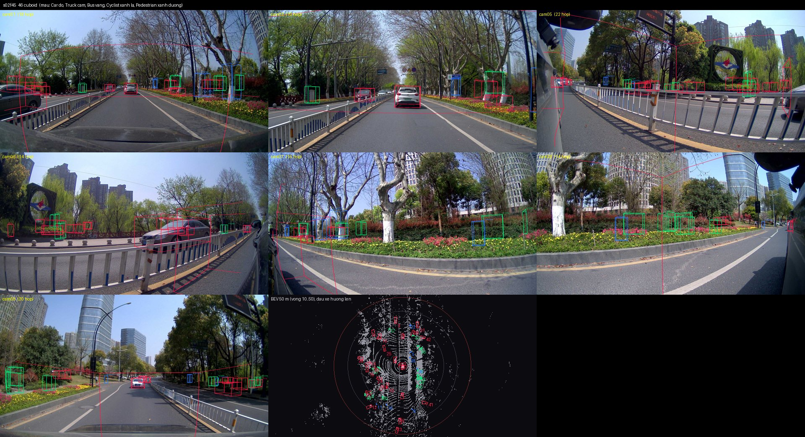
vf_cvat.py prelabel --task A (bỏ --org trên Docker local). Mở trang Tasks, vào D14-<ID>-A kiểm tra đủ 5 nhãn (Car, Truck, Bus, Cyclist, Pedestrian) và đúng 3 frame.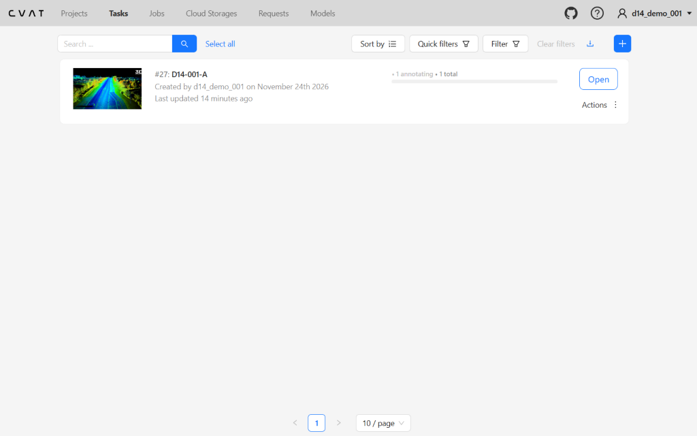
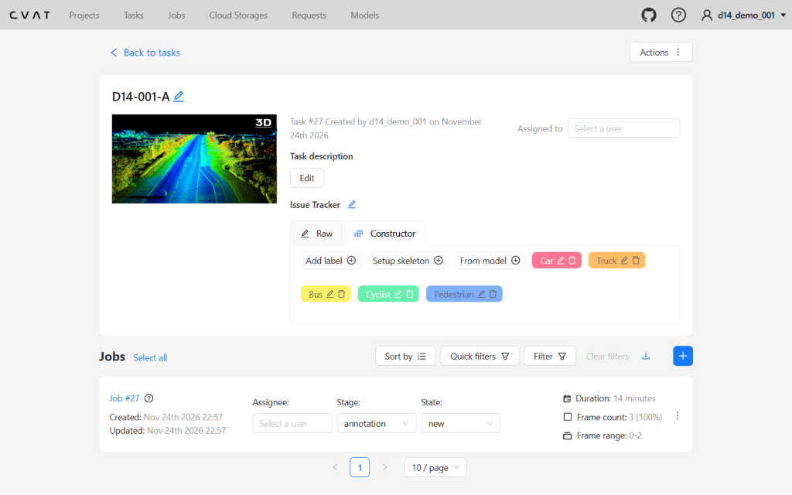
Standard 3D và thực hiện đủ bốn thao tác chuẩn hóa:
Objects (Items) và DETAILS (L/W/H, pp_id, score, warn, note).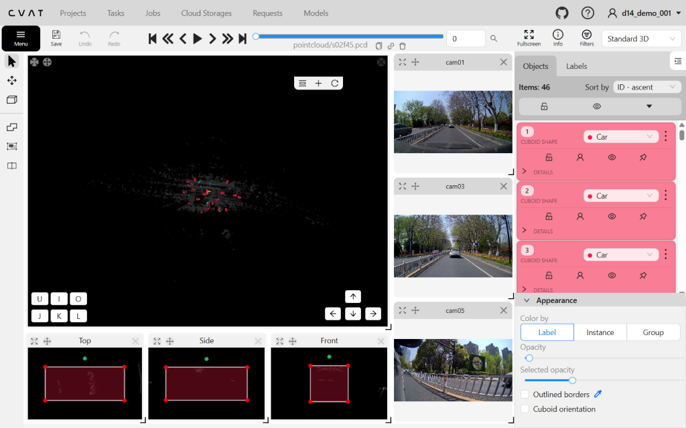
Top / Side / Front hoặc gõ L/W/H, rồi đổi nhãn đúng (Car → Truck/Bus).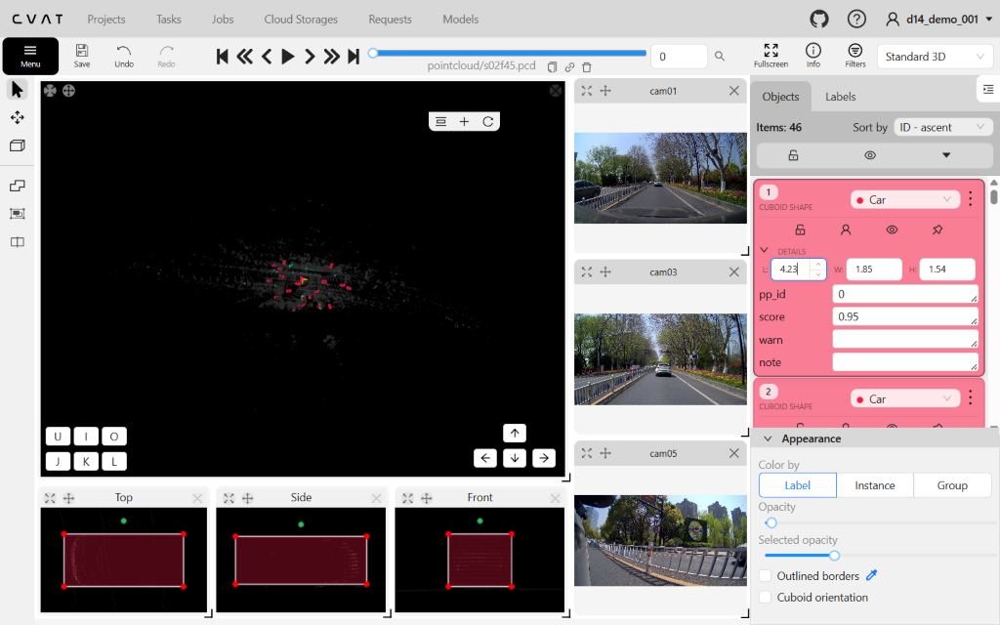
⋮ → Remove trên thẻ đối tượng (hoặc Delete), kiểm tra Items giảm đi 1.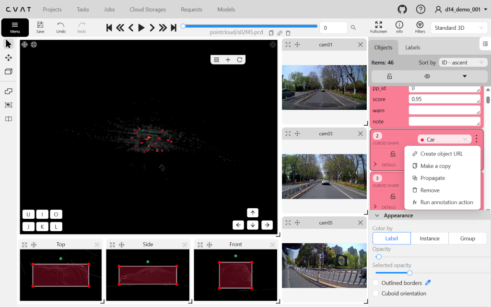
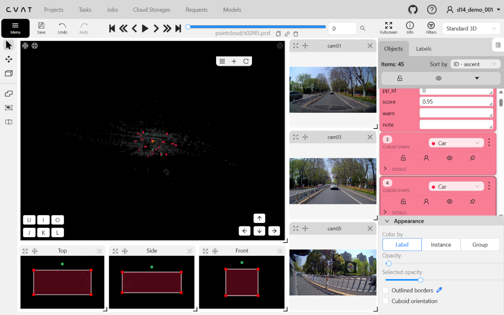
Shape và Save: Chọn icon lập phương, bấm Shape (KHÔNG Track), double-click khung 3D, căn 3 mặt cắt Top / Side / Front, rồi bấm Save tới khi nút mờ đi.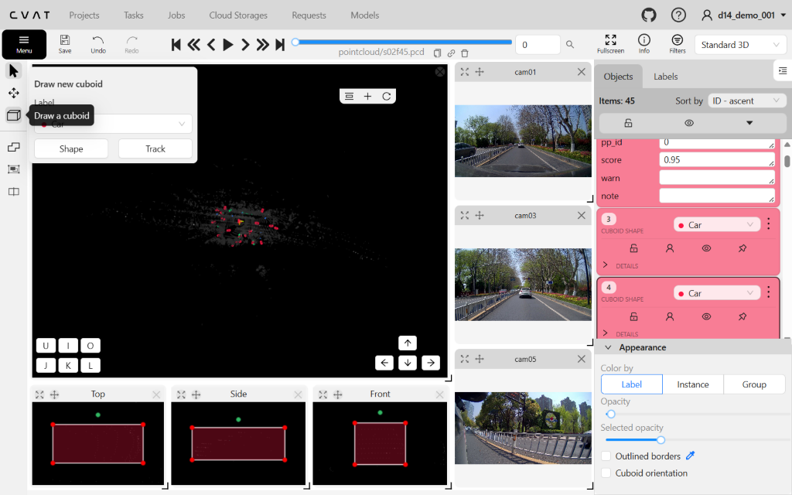
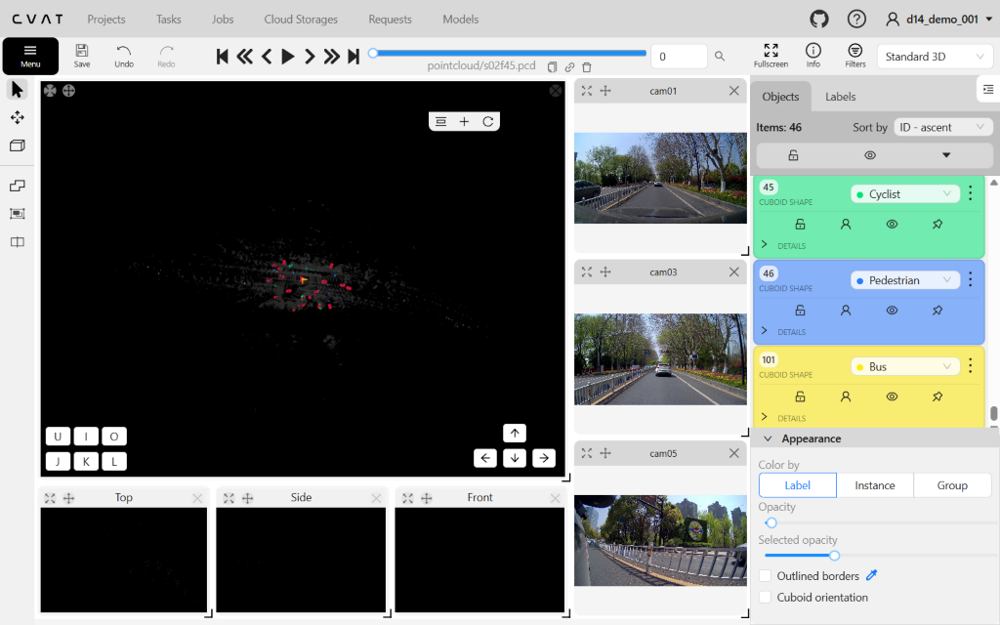
ref_A.json và đo baseline: Chạy vf_cvat.py reference --task A xuất d14_<ID>/ref_A.json, xác nhận số box khớp Items và 0 cảnh báo Track (thêm --scale-order wlh nếu server đảo L/W). Chạy tiếp pp_prelabel.py ... --gt d14_<ID>/ref_A.json ghi nhận chi phí gốc tập A.Pha 2 hoàn tất khi d14_<ID>/ có đủ frames_A.txt, frames_B.txt, pred_A.json và ref_A.json, trong đó số hộp từ vf_cvat.py reference --task A khớp 100% Items trên CVAT và không có cảnh báo Track trên stderr. Kết quả từ pp_prelabel.py ... --gt d14_<ID>/ref_A.json cho thấy chi phí trên tập A chủ yếu do xóa box thừa hay thêm vật sót. Sau đó nghỉ giải lao 10 phút (1:40 → 1:50) và sao chép report/individual/MSSV_HoTen.md thành report/individual/<MSSV>_<HoTen>.md (không dấu) để chuẩn bị commit mục 1 (Bước 5b) đầu Pha 3.
Mục đích trọng tâm của Pha 3 là kiểm nghiệm trực giác kỹ thuật bằng bằng chứng lịch sử Git trước khi đo số liệu thực nghiệm. Ở Bước 5b, bạn sao chép template report/individual/MSSV_HoTen.md thành report/individual/<MSSV>_<HoTen>.md (không dấu), viết mục 1 gồm 2 dòng dự đoán trước khi chạy pp_sweep.py (tham số nào giảm công sửa nhiều nhất và vì sao dựa trên ảnh BEV/baseline tập A), rồi chạy git commit -m "5b: dự đoán" và git push ngay lên repo cá nhân K5-L23-DAY14-HoVaTen-MSSV-PointPillarsPrelabel. Theo RUBRIC.md mục 3 (20 điểm), nếu lịch sử commit cho thấy mục 1 được thêm hoặc sửa sau khi đã có sweep.csv, thứ tự trình bày trong báo cáo không đủ làm bằng chứng và mục này bị mất điểm; đoán sai nhưng đối chiếu giải thích đúng vẫn được đủ điểm.
pp_sweep.py tách rạch ròi tham số mạng (MODEL_KNOBS: voxel_size, intensity_mode, intensity_scale, ground_mode, delta_z, passes, nms_thr, nms_pre, max_num) khỏi tham số hậu xử lý (score_thr, min_points, range_m). Với mỗi tổ hợp MODEL_KNOBS, model chỉ chạy một lần tại score_thr = 0.05 rồi đệm kết quả trong RAM, nên lưới hậu xử lý chạy nhanh mà không tạo file tạm.
Cuối lượt quét, pp_sweep.py in leave-one-out: chọn cấu hình tốt nhất trên 2 frame còn lại, chấm lên frame giữ ra và so với điểm oracle riêng frame đó. Nếu kết quả nhảy mạnh giữa các frame, best_config.json đang có nguy cơ overfit vào 3 frame tập A; hãy dán và nhận xét phần này vào mục 2 báo cáo.
0.1 trong lưới và đọc ảnh BEV 52 mKhi truyền --grid cho pp_sweep.py, giữ hai quy tắc vận hành quan trọng: thứ nhất, luôn viết đủ dấu = dạng key=vals (bỏ thiếu = làm parser dừng và báo lỗi --grid ...: không có tham số này); thứ hai, luôn giữ mức mặc định score_thr=0.1 cùng min_points=0 trong lưới làm đối chứng để thuật toán không ép chọn 0.2 khi chi phí tăng. Ở Bước 8, pp_compare.py vẽ hai khung BEV cạnh nhau (gốc bên trái, của bạn bên phải) trong phạm vi ±52 m kèm vòng đỏ 50 m đúng phạm vi chấm correction_cost: xanh lá (giữ nguyên), vàng (cần sửa), đỏ (thừa, cần xóa) và xanh dương (sót, cần vẽ thêm).
Đảm bảo origin đã trỏ về repo nộp cá nhân của bạn (K5-L23-DAY14-HoVaTen-MSSV-PointPillarsPrelabel) trước khi push commit Bước 5b, rồi mới chạy pp_sweep.py và pp_compare.py.
# Windows (PowerShell) · Bước 5b: điền Mục 1 rồi commit & push TRƯỚC sweep
git remote set-url origin "https://github.com/<tai-khoan>/K5-L23-DAY14-HoVaTen-MSSV-PointPillarsPrelabel.git"
git add "report/individual/<MSSV>_<HoTen>.md"
git commit -m "5b: dự đoán"
git branch -M main
git push -u origin main
python pp_sweep.py --data "<Data-VF>" --frames "d14_<ID>/frames_A.txt" --gt "d14_<ID>/ref_A.json" --grid score_thr=0.1,0.2,0.3,0.4,0.5 --grid min_points=0,5,10 --out "d14_<ID>/sweep.csv"
python pp_compare.py --data "<Data-VF>" --frames "d14_<ID>/frames_A.txt" --gt "d14_<ID>/ref_A.json" --tuned "d14_<ID>/best_config.json" --out "d14_<ID>/compare"# macOS / Linux (Bash) · Bước 5b: điền Mục 1 rồi commit & push TRƯỚC sweep
git remote set-url origin "https://github.com/<tài-khoản>/K5-L23-DAY14-HoVaTen-MSSV-PointPillarsPrelabel.git"
git add "report/individual/<MSSV>_<HoTen>.md"
git commit -m "5b: dự đoán"
git branch -M main
git push -u origin main
python pp_sweep.py --data "<Data-VF>" --frames "d14_<ID>/frames_A.txt" --gt "d14_<ID>/ref_A.json" --grid score_thr=0.1,0.2,0.3,0.4,0.5 --grid min_points=0,5,10 --out "d14_<ID>/sweep.csv"
python pp_compare.py --data "<Data-VF>" --frames "d14_<ID>/frames_A.txt" --gt "d14_<ID>/ref_A.json" --tuned "d14_<ID>/best_config.json" --out "d14_<ID>/compare"<ID>, seed_tag từ frames_A.txt và 2 dòng dự đoán dựa trên ảnh BEV png_A/ cùng baseline Bước 5) vào report/individual/<MSSV>_<HoTen>.md, rồi chạy git commit -m "5b: dự đoán" và git push trước khi chạy sweep; tuyệt đối không sửa lại mục 1 sau khi có kết quả.pp_sweep.py trên 15 cấu hình (5 × 3 trên tập A) để xuất d14_<ID>/sweep.csv và d14_<ID>/best_config.json. Ghi bảng gốc vs best_config.json, kết quả leave-one-out và lý do chọn cấu hình vào mục 2 báo cáo.pp_compare.py để tính phần trăm thay đổi công sửa và tạo ảnh BEV d14_<ID>/compare/*.jpg. Chèn 1 ảnh vào mục 3 báo cáo (), ghi nhận xét thẳng thắn dự đoán Bước 5b đúng hay sai so với số xóa/thêm/sửa thực tế.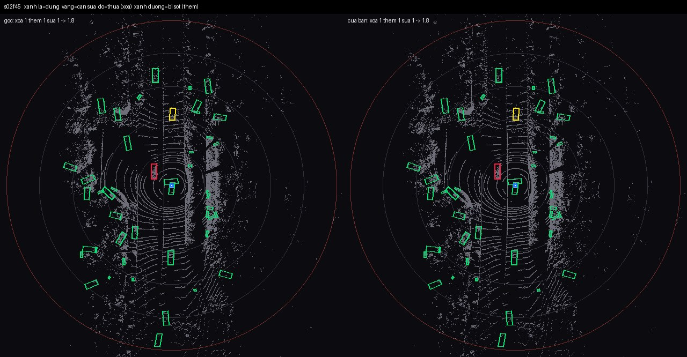
Bạn kết thúc Pha 3 khi lịch sử GitHub đã có commit "5b: dự đoán" nằm trước bước chạy sweep, trong d14_<ID>/ đã có đủ sweep.csv, best_config.json, bộ ảnh compare/*.jpg, và report/individual/<MSSV>_<HoTen>.md đã điền xong mục 1, 2 và 3 (kèm nhận định leave-one-out và 1 ảnh đối chiếu). Hãy đọc lại mức chênh lệch giữa cấu hình được chọn trên 2 frame còn lại với điểm oracle của từng frame trước khi áp dụng best_config.json lên 12 frame độc lập của Tập B ở Pha 4.
Trong thực tế triển khai dữ liệu, một bộ siêu tham số chỉ có giá trị khi vượt qua bài kiểm tra trên dữ liệu mới chưa từng tham gia quá trình tinh chỉnh. Tập B (frames_B.txt, 12 frame trải đều trên 4 sequence) chính là sản phẩm bàn giao trọng tâm của Day 14 (30/100 điểm theo RUBRIC.md mục 4). Ở Pha 4, bạn dùng d14_<ID>/best_config.json để sinh pred_B.json, đẩy lên CVAT thành task D14-<ID>-B, tự rà và sửa toàn bộ 12 frame bằng Shape, xuất ref_B.json ở Bước 9 rồi đo lại chi phí sửa bằng pp_prelabel.py --gt d14_<ID>/ref_B.json cho mục 4 báo cáo. Mọi box nộp phải được người kiểm; tuyệt đối không nộp thẳng box của model: theo Rubric mục 4, nếu mọi box trong mọi frame của ref_B.json trùng khớp pred_B.json (tọa độ, kích thước, yaw, lớp), bài bị mất toàn bộ 30 điểm mục này. Hoàn thành thêm mục 5 báo cáo nêu ít nhất 2 giới hạn.
ref_B.json, cấu hình .gitignore và nộp commit SHA trên LMSVì dùng CVAT Docker cá nhân (http://localhost:8080), coach không mở CVAT cá nhân của bạn mà chấm hoàn toàn từ các file trong repo tại commit SHA bạn nộp trên LMS (SUBMISSION.md). Đầu tiên, coach git checkout <SHA> và chạy check_student.py với SEED buổi lab trên d14_<ID>/frames_A.txt và frames_B.txt; nếu báo CÓ VẤN ĐỀ (sai SEED, sai ID hoặc sửa tay frame), các mục 1–5 không được chấm.
Trong cấu hình repo, .gitignore chỉ bỏ qua d14_*/png_*/ (cùng third_party/, out/, nop/, xem/, .venv/, *.zip, .env), nên mọi file bắt buộc trong d14_<ID>/ và report/individual/<MSSV>_<HoTen>.md đều được phép commit và push lên repo cá nhân K5-L23-DAY14-HoVaTen-MSSV-PointPillarsPrelabel (không dấu, không khoảng trắng; mời GitHub coach nếu Private). Không commit Data-VF, third_party/, mật khẩu CVAT hay .env. Hạn nộp link https://github.com/<tài-khoản>/<repo>/commit/<SHA> lên LMS trước 12:00 trưa hôm sau (GMT+7); không force-push hoặc xóa commit đã nộp (RULES.md).
# Windows (PowerShell) · Bước 7, Bước 9 & nộp commit SHA
python pp_prelabel.py --data "<Data-VF>" --frames "d14_<ID>/frames_B.txt" --config "d14_<ID>/best_config.json" --out "d14_<ID>/pred_B.json"
python vf_cvat.py prelabel --student "<ID>" --task B --data "<Data-VF>" --boxes "d14_<ID>/pred_B.json" --host http://localhost:8080 --user "<ten>"
# ... Mở task D14-<ID>-B trên CVAT 3D, sửa đủ 12 frame bằng Shape và bấm Save ...
python vf_cvat.py reference --student "<ID>" --task B --host http://localhost:8080 --user "<ten>"
python pp_prelabel.py --data "<Data-VF>" --frames "d14_<ID>/frames_B.txt" --config "d14_<ID>/best_config.json" --gt "d14_<ID>/ref_B.json"
# ... Điền mục 4 & mục 5 vào report/individual/<MSSV>_<HoTen>.md rồi commit & push ...
git add "d14_<ID>" report
git commit -m "Day 14: bài nộp"
git push -u origin main
git rev-parse HEAD# macOS / Linux (Bash) · Bước 7, Bước 9 & nộp commit SHA
python pp_prelabel.py --data "<Data-VF>" --frames "d14_<ID>/frames_B.txt" --config "d14_<ID>/best_config.json" --out "d14_<ID>/pred_B.json"
python vf_cvat.py prelabel --student "<ID>" --task B --data "<Data-VF>" --boxes "d14_<ID>/pred_B.json" --host http://localhost:8080 --user "<ten>"
# ... Mở task D14-<ID>-B trên CVAT 3D, sửa đủ 12 frame bằng Shape và bấm Save ...
python vf_cvat.py reference --student "<ID>" --task B --host http://localhost:8080 --user "<ten>"
python pp_prelabel.py --data "<Data-VF>" --frames "d14_<ID>/frames_B.txt" --config "d14_<ID>/best_config.json" --gt "d14_<ID>/ref_B.json"
# ... Điền mục 4 & mục 5 vào report/individual/<MSSV>_<HoTen>.md rồi commit & push ...
git add "d14_<ID>" report
git commit -m "Day 14: bài nộp"
git push -u origin main
git rev-parse HEADpp_prelabel.py với --config d14_<ID>/best_config.json trên frames_B.txt tạo pred_B.json, rồi đẩy lên CVAT tạo task D14-<ID>-B (12 frame). Kiểm tra trang Tasks hiện đủ cả D14-<ID>-A và D14-<ID>-B.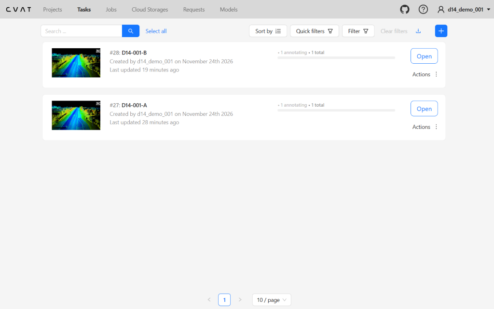
D14-<ID>-B trên CVAT 3D, sửa hộp lệch/sai lớp (Car → Truck/Bus), xóa hộp thừa, vẽ thêm mọi đối tượng sót trong 50 m bằng Shape (không Track), rồi bấm Save.vf_cvat.py reference --task B xuất d14_<ID>/ref_B.json (đủ 12 frame, khớp Items, 0 cảnh báo Track, không trùng nguyên pred_B.json). Chạy tiếp pp_prelabel.py ... --gt d14_<ID>/ref_B.json ghi số xóa/thêm/sửa/chi phí vào mục 4 và nêu ít nhất 2 giới hạn vào mục 5 trong report/individual/<MSSV>_<HoTen>.md (không phóng đại % hay gọi cost là "tiết kiệm X giờ công").git remote set-url origin https://github.com/<tài-khoản>/K5-L23-DAY14-HoVaTen-MSSV-PointPillarsPrelabel.git và git branch -M main. Sau đó chạy git add d14_<ID> report, git commit -m "Day 14: bài nộp", git push -u origin main, lấy SHA từ git rev-parse HEAD và nộp link https://github.com/<tài-khoản>/K5-L23-DAY14-HoVaTen-MSSV-PointPillarsPrelabel/commit/<SHA> lên LMS trước 12:00 trưa hôm sau (GMT+7).# Cấu trúc file bắt buộc trong repo nộp (d14_*/png_*/ bị .gitignore bỏ qua)
K5-L23-DAY14-HoVaTen-MSSV-PointPillarsPrelabel/
├── d14_<ID>/ # giữ số 0 đầu, ví dụ d14_001/ (png_*/ đã bị .gitignore bỏ qua)
│ ├── frames_A.txt # 3 frame tập A kèm seed_tag= (không sửa tay)
│ ├── frames_B.txt # 12 frame tập B kèm seed_tag= (không sửa tay)
│ ├── pred_A.json # pre-label gốc trên tập A
│ ├── ref_A.json # nhãn tham chiếu A đã sửa trên CVAT
│ ├── sweep.csv # bảng quét lưới tham số Bước 6
│ ├── best_config.json # cấu hình tốt nhất từ pp_sweep.py
│ ├── pred_B.json # pre-label dùng best_config.json (B)
│ ├── compare/*.jpg # ảnh BEV trước/sau 52 m (ít nhất ảnh dùng trong báo cáo)
│ └── ref_B.json # nhãn Tập B 12 frame đã sửa xong (sản phẩm chính)
└── report/individual/<MSSV>_<HoTen>.md # mục 1 đã commit trước sweep; đủ mục 1–5Trước khi dán link commit lên LMS, hãy mở repo K5-L23-DAY14-HoVaTen-MSSV-PointPillarsPrelabel trên GitHub ở đúng commit git rev-parse HEAD và đối chiếu đủ checklist trong SUBMISSION.md lẫn CHECKPOINTS.md. Kiểm tra seed_tag= trong frames_A.txt và frames_B.txt còn nguyên vẹn, ref_B.json đủ 12 frame sau Save và khác pred_B.json, lịch sử commit chứng minh mục 1 (5b: dự đoán) có trước sweep.csv, d14_*/png_*/ không bị push thừa, và không lộ Data-VF, third_party/, <SEED> thô hay mật khẩu CVAT.
frames_A.txt và frames_B.txt giữ nguyên seed_tag= và mã <ID> có số 0 đầu.5b: dự đoán) đã commit và push trước sweep.csv.ref_A.json và ref_B.json khớp Items, không Track, không BOM, khác pred_B.json.pp_prelabel.py --gt ref_B.json và điền đủ 5 mục báo cáo.K5-L23-DAY14-HoVaTen-MSSV-PointPillarsPrelabel đủ file theo SUBMISSION.md, đã bỏ qua png_*/.git rev-parse HEAD lên LMS trước 12:00 trưa hôm sau.vf_pp/core.py & vf_d14.py)Phạm vi chấm điểm & lọc BEV (MAX_RANGE / range_m) | ≤ 50.0 m |
Công thức chi phí sửa tay (correction_cost) | 0.3·xóa + 1.0·thêm + 0.5·sửa |
| Ngưỡng ghép 1–1 dự đoán ↔ tham chiếu (Hungarian BEV IoU) | ≥ 0.3 |
Điều kiện hộp khớp bị tính "sửa" (needs_edit) | sai lớp | tâm > 0.3 m | cạnh > 0.2 m | yaw > 10° (mod π) |
| Số lượt xoay phủ 360° / vùng nhìn 1 lượt KITTI | passes = 4 (0–69.12 m, ±39.68 m) |
| Kích thước voxel mặc định khớp weights KITTI | voxel_size = 0.16 m |
| Số frame Tập A (tune) / Tập B (nộp) | 3 frame (3 seq) / 12 frame (4×3, cách ≥ 15) |
| Khoảng cách tách Tập A khỏi Tập B cùng sequence | ≥ 6 frame (tránh ±2 frame giảng & D13) |
| Hạn nộp link commit SHA repo GitHub lên LMS | 12:00 trưa hôm sau (GMT+7) |
<ID> có số 0 đầu & file frames_*.txt: "001" và "01" tạo ra hai bộ frame và hai thư mục (d14_001/ vs d14_01/) khác nhau; không sửa tay frames_*.txt (bị check_student.py chấm CÓ VẤN ĐỀ = 0 điểm mục 1–5)..json bằng Notepad BOM: bản a5f6b9c đã chịu BOM ở frames_*.txt và --config, nhưng pred_*.json / ref_*.json vẫn đọc utf-8 thuần.Shape (KHÔNG chọn Track): vf_cvat.py reference chỉ đọc shapes, bỏ qua tracks và báo trên stderr. Luôn bấm Save và đối chiếu số Items.--org là tùy chọn: bỏ hẳn --org khi dùng CVAT Docker local (http://localhost:8080); chỉ truyền đồng bộ ở Bước 3, 5, 7 & 9 nếu server lớp dùng organization.5b: dự đoán) trước khi chạy pp_sweep.py; mọi box Tập B phải do người kiểm (ref_B.json trùng mọi box của pred_B.json = 0 điểm mục 4); giữ mốc 0.1 và dấu = trong --grid; không gọi điểm cost là "tiết kiệm giờ công"..gitignore chỉ bỏ qua d14_*/png_*/; commit d14_<ID>/ và report/individual/<MSSV>_<HoTen>.md lên repo K5-L23-DAY14-HoVaTen-MSSV-PointPillarsPrelabel (mời coach nếu Private), nộp link commit từ git rev-parse HEAD lên LMS trước 12:00 trưa hôm sau (GMT+7); không force-push hay commit Data-VF, third_party/, mật khẩu CVAT, .env.Phím tắt: Space chạy/dừng · ←→ pha trước/sau · T sáng/tối · P trình chiếu · F toàn màn hình
PowerShell 5.1 lỗi &&, source hoặc chặn Activate.ps1 | Chạy từng dòng lệnh riêng; chạy Set-ExecutionPolicy -Scope Process -ExecutionPolicy Bypass rồi kích hoạt .\.venv\Scripts\Activate.ps1 và đặt $env:PYTHONUTF8 = "1". |
setup_pp.py lỗi read-only .git hoặc máy không có git | Chạy python setup_pp.py --download-zip; nếu chạy lại trên bản clone cũ bị kẹt third_party, xóa bằng Remove-Item -Recurse -Force third_party rồi tải lại. |
Lưu đè .json bằng Notepad BOM gây JSONDecodeError | Không mở lưu đè pred_*.json hay ref_*.json bằng Notepad UTF-8 BOM; nếu lỡ lưu đè, kéo lại từ CVAT bằng vf_cvat.py reference hoặc tạo lại bằng pp_prelabel.py. |
Docker báo exit 137 (OOM) hoặc mất d14_<ID>/ | Tắt CVAT Docker (docker compose stop) khi chạy model nếu WSL2 RAM ≤ 4 GB; luôn mount -v "${PWD}\work:/work" -w /work và dùng --host http://host.docker.internal:8080. |
vf_cvat.py reference thiếu box vừa vẽ (kèm cảnh báo Track) | Trong popup Draw new cuboid của CVAT 3D đã bấm nhầm Track: xóa Track đó trên CVAT, vẽ lại bằng nút Shape, bấm Save rồi chạy lại reference. |
Lỗi 404 organization does not exist khi truyền --org | CVAT Docker local không có organization tương ứng — bỏ hẳn cờ --org ở cả Bước 3, 5, 7 và 9 (hoặc kiểm đúng slug khi chạy server lớp). |
pp_sweep.py báo --grid ...: không có tham số này | Truyền tham số trong --grid bị thiếu dấu = — luôn viết đúng cú pháp --grid score_thr=0.1,0.2,0.3,0.4,0.5 và nhớ giữ mốc 0.1. |
Thiếu SEED hoặc dài/rộng trên CVAT bị đảo | Truyền --seed "<SEED>" (hoặc $env:D14_SEED="<SEED>" / export D14_SEED="<SEED>"); nếu server CVAT khác đảo L/W, dùng reference --scale-order wlh. |
Mất điểm mục 3 (5b), mục 4 (Tập B), hoặc bị CÓ VẤN ĐỀ | Commit & push mục 1 (5b: dự đoán) trước khi chạy pp_sweep.py; tự kiểm sửa đủ 12 frame Tập B để ref_B.json không trùng pred_B.json và chạy pp_prelabel.py --gt d14_<ID>/ref_B.json cho mục 4; giữ nguyên frames_*.txt có seed_tag= và nộp đúng link commit SHA. |
VinUni-AI20k/K5-L23-Day14-PointPillars-Prelabel (a5f6b9c + SUBMISSION.md / RUBRIC.md / CHECKPOINTS.md / RULES.md). Mốc giờ là điểm tự kiểm tại lớp; nộp link commit SHA repo K5-L23-DAY14-HoVaTen-MSSV-PointPillarsPrelabel lên LMS trước 12:00 trưa hôm sau (GMT+7).